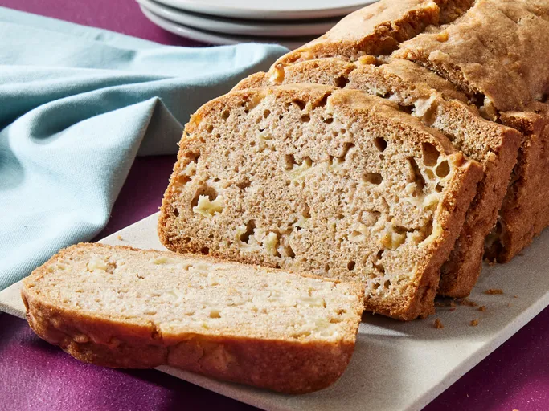

Debbie’s Amazing Apple Bread

Description
This apple bread recipe was given to me years ago by my friend Debbie.
I’ve had it written down on a torn piece of paper for years and decided
that it needs to be shared. By far my favorite bread recipe!
Ingredients
- ¾ cup white sugar
- 2 large eggs
- ½ cup vegetable oil
- 2 teaspoons vanilla extract
- 2 cups all-purpose flour
- 1 ½ teaspoons ground cinnamon, or more to taste
- 1 teaspoon kosher salt
- 1 teaspoon baking powder
- ½ teaspoon baking soda
- 2 cups apples, peeled and chopped into 1/4-inch cubes
Steps
- Gather the ingredients.
-
Preheat the oven to 350 degrees F (175 degrees C). Grease a 9x5-inch
loaf pan.
-
Whisk sugar, eggs, vegetable oil, and vanilla extract in a large mixing
bowl until well combined.
-
Whisk flour, cinnamon, salt, baking powder, and baking soda together in
a medium bowl until well combined; add to sugar mixture and stir until
just combined. Stir in apples until evenly combined. Spoon batter into
the prepared loaf pan.
-
Bake in the preheated oven for 45 minutes. Cover loaf pan with aluminum
foil; continue baking until a toothpick inserted into the center comes
out clean, about 15 minutes more. Cool briefly in the pan before
removing to cool completely on a wire rack.
- Slice and enjoy!